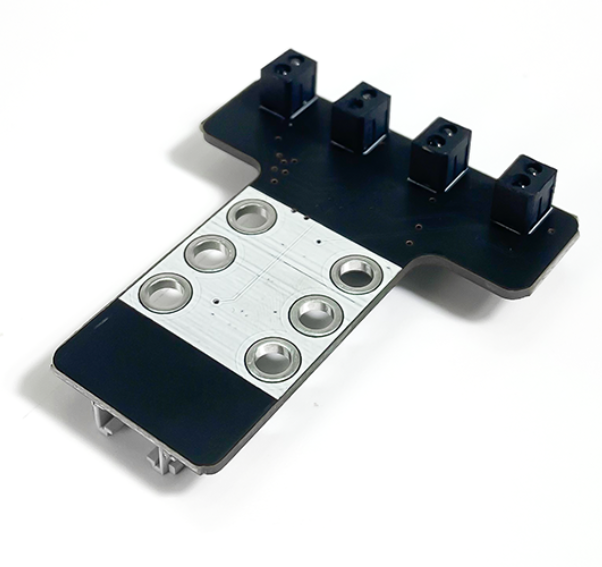
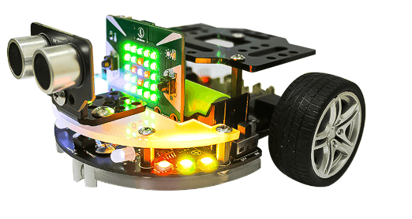
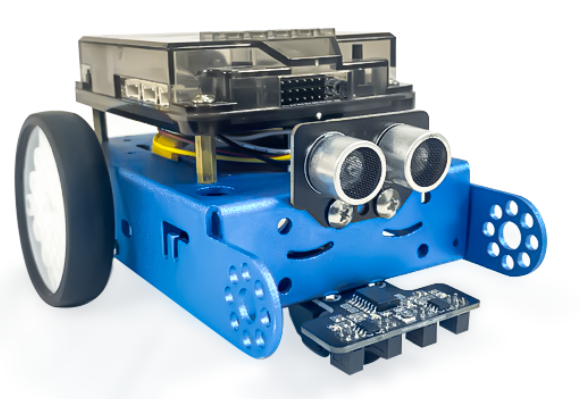

10. Cảm biến dò đường 4 mắt
{kind=link}
Module cảm biến dò đường là lựa chọn hoàn hảo cho các ứng dụng điều hướng robot. Module dò đường loại 4 mắt có năm cảm biến quang học phản chiếu, được sử dụng để theo dõi chính xác bề mặt màu đen.
Mạch sử dụng cảm biến hồng ngoại với khoảng cách có thể phát hiện vạch đen, nền trắng từ 1~25mm giúp bạn dễ dàng tùy chỉnh module theo nhu cầu. Dựa vào cách hoạt động này, cảm biến sẽ biết được đâu là vạch đen và đâu là nền trắng.
Cảm biến dò đường được ứng dụng vào các dự án như robot chạy theo đường vẽ được chỉ định sẵn hoặc khi sử dụng sa bàn, giải mê cung,…
1. Mua sản phẩm

2. Thông số kỹ thuật
Thông số kỹ thuật
Nguồn cung cấp: 3.3V
Sử dụng 4 cảm biến hồng ngoại.
Sử dụng IC mở rộng: PCF8574T
Dòng điện tiêu thụ: <10mA.
Dải nhiệt độ hoạt động: 0oC ~ 50oC.
Mức tín hiệu ngõ ra: TTL
Kích thước: 2.4 x 4.8mm
Pinout của cảm biến dò đường 4 mắt
Cảm biến dò đường 4 mắt có 4 chân, và mỗi chân có chức năng như sau:
STT |
Chân |
Chức năng |
|---|---|---|
1 |
GND |
Nối đất |
2 |
VCC |
Cấp nguồn (3.3V) |
3 |
SCL |
Xung tín hiệu |
4 |
SDA |
Truyền tín hiệu |
3. Chuẩn bị thiết bị
Cảm biến dò đường thường được sử dụng trên Robot Rover hoặc xBot, để làm việc với cảm biến bạn cần có một trong hai thiết bị sau:
|  |  |
|---|---|
Robot Rover (kèm Yolo:Bit) |
Robot xBot |
{kind=link}
{kind=link}
4. Hướng dẫn lập trình
Đối với robot Rover:
{kind=link}
{kind=link}
{kind=link}
Note
Giải thích chương trình: Ở trong vòng lặp mãi, tương ứng với mỗi trạng thái là: nhận mắt S1, S2, S3, S4, chương trình sẽ in ra cửa sổ Serial các hàng ký tự tương ứng với từng trạng thái đó.
Đối với robot xBot::
{kind=link}
{kind=link}
Note
Giải thích chương trình: Chương trình được thực hiện tương tự như Robot Rover.
5. Hướng dẫn tinh chỉnh cảm biến dò đường:
<>